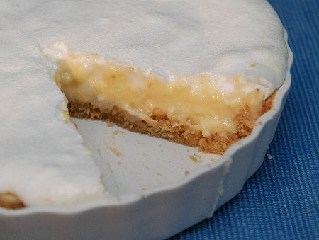

| Zutaten: | |
| Teig | |
| 115g | Butter oder Margarine |
| 55g | Zucker |
| 115g | Mehl |
| 55g | gemahlene Mandeln |
| Füllung | |
| 30g | Maizena |
| 2.5dl | Milch |
| 4 | Eigelb |
| 85g | Zucker |
| 1 | Zitrone |
| Meringue | |
| 4 | Eiweiss |
| 170g | Puderzucker |
(Kann durch Kuchen oder Blätterteig ersetzt werden. Am Besten vermutlich mit Mürbeteig. Aber nicht vergessen den als ersten Schritt zu backen!)
Die (kleine Spring-) Form mit Butter ausreiben und anschliessend mit Mehl bestäuben.
Die Zutaten für den Teig (Zucker, Mehl, gemahlene Nüsse) mit der zimmerwarmen(!) Butter verreiben. Teig zusammenfügen. Die Form damit auskleiden. Mit einer Gabel einstechen und 30 Minuten kühl stellen.
Bei 190°C backen bis gold-braun. Ca 15 Min. Auskühlen lassen.
Zitronenschale abreiben. Zitrone auspressen.
Eier trennen. Die Eiweiss in ein Gefäss um sie steif zu schlagen, die Eigelb in die Milch einrühren.
Die Eiweiss mit dem Handmixer (nicht Bamix) sehr steif schlagen.
Erst nachdem der Eischnee Spitzen wirft den Zucker vorsichtig zugeben. Achtung: keinen Pflatsch machen!
Maizena in eine Pfanne geben und mit 1dl Milch vollständig auflösen.
Den Rest der Milch (1dl) dazu giessen und auf dem Herd erwärmen. Die Milch wird sofort verklumpen wenn man nicht kräftig rührt. Weiter kochen bis die Milch richtig dickflüssig ist. Dann in eine Schüssel umleeren und kühl stellen. Von Zeit zu Zeit umrühren.
Dann Zucker, Zitronenschale und Zitronensaft dazu rühren.
Genau 2 Minuten bei 150°C backen.
Den Eischnee auf die Zitronenmasse geben (Achtung, die Milchmasse ist noch nicht richtig fest!) und im Ofen ca. 20 Minuten trocknen lassen. Meringue sollte nicht anbräunen.
An English cook book of Shirley's
A bit on the sweet side (see the copious quantities of sugar going in). The meringue is also a bit on the challenging side. Apparently one can beat eggwhite for as long as one likes. The taste is very nice, definitely a recipe to try again and again. RE, 23.12.2006
Did this again on 24 Dec 2010 and got all confused with the eggs. Have straightened out the recipe now. Also the 170g of sugar is rather a lot but I didn't realise that caster sugar is Puderzucker. RE
27 May 2012 made a mess of the recipe despite trying to do it right. Bought the ready-made dough but didn't bake it before the filling came on. Then the eggwhites don't beat stiff with the sugar in them. First beat the egg whites and then add the sugar carefully. Discovered that Castor sugar is finer sugar than the normal sugar but not icing sugar. Migros sells a superfine sugar. Best to use the beater and not the Bamix. With the Bamix you need to pour boiling watter over the shaft and add the same amount of warm water to the egg whites and some Cream of Tartar (or substitue this with Salt).
Gelang am 26.12.2014 endlich richtig. Sandra musst aber darauf bestehen, dass die Butter zimmerwarm sei.
Hundefrühstück am 21 Nov 2019
@LINKBACK_TAG@ @WAKELOCK@